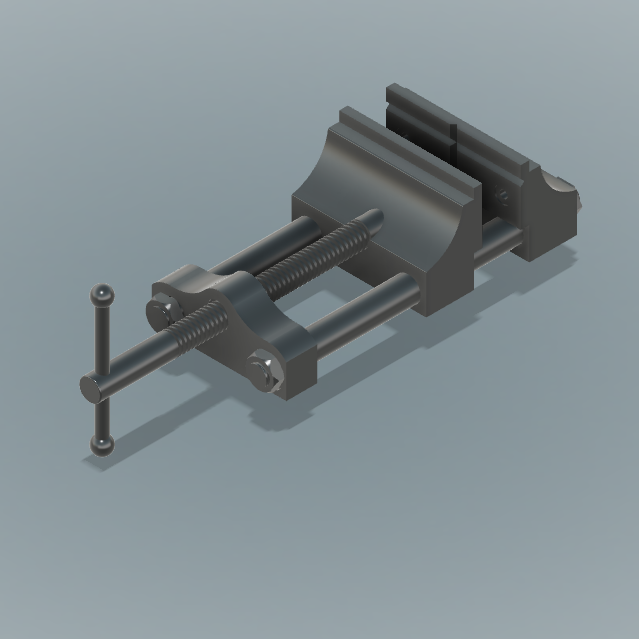
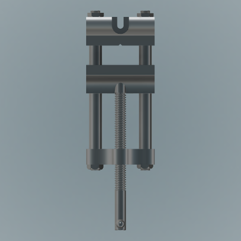
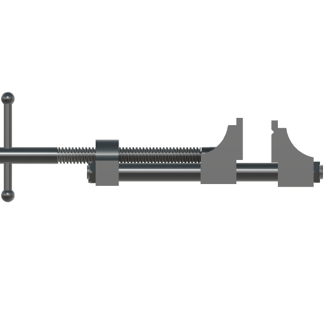

01
Drill Press Vice Model
I modeled a drill press vice at full 1:1 scale in Fusion 360, working from a set of engineering design sheets. It has more than 20 components, all assembled with working motion joints, and I ran stress simulations on it to see how it would handle load. Getting the dimensions right across that many parts was the hardest part. Small errors added up, and once the tolerances stopped lining up I had to rebuild several components from scratch.


